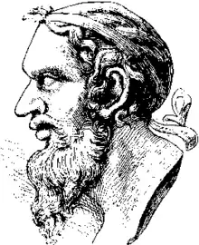

Анакреонт (бл. 570-478 р. до н.е.) – знаний грецький поет, що увійшов у історію світової лірики, перш за все, як творець веселої любовної лірики. Проживав він на острові Теос, біля малоазійського побережжя Греції. Але, коли його батьківщина була окупована Персією, Анакреонт став мандрівником і подорожував по різних регіонах Греції та грекомовних країнах. Він знаходив собі прихисток при дворах при дворах еллінських тиранів. Тиранами у той час називали людей, які приходили до влади, не успадковуючи її від своїх родичів. А тому вони хвилювалися, що після смерті, коли їх перестануть боятися, люди можуть осквернити їх прах. Це штовхало тиранів на незвичні кроки. Так, наприклад, вони охоче запрошували до себе митців, учених, поетів, які, по-перше, сприяли б зростанню авторитету можновладців, а по-друге, змогли б увіковічнити пам'ять про них у витворах мистецтва. Саме у ролі такого придворного поета не раз опинявся Анакреонт.
До нашого часу дійшло лише кілька текстів його віршів. Але і ця поетична спадщина дозволяє літературознавцям відтворити досить цілісний образ давньогрецького митця.
Дослідники вважають Анакреонта представником монодичної меліки. Усе життя він мав у пошані трьох богів – Ерота, Афродіту і Діоніса. Але на відміну від Сапфо, яка зверталася до Афродіти зі щирою молитвою, Анакреонт писав переважно манірні і напівжартівливі вірші, у котрих частіше згадував Діоніса – бога виноградної лози і покровителя вина. А тому "застольна" тематика зустрічається в нього не рідше любовної. Простота у сприйнятті світу, ясне, безхитрісне ставлення до життя і кохання (як до легкої гри) відчутно відрізняють твори Анакреонта від лесбійської лірики й іонійської елегії. Отже, основа творчості Анакреонта – зображення безтурботно-веселого життя. На відміну від Сапфо, у його віршах ми не знайдемо описів любовних мук, переживань, ревнощів. Так, у вірші "Золотоволосий Ерот..." поет говорить про те, що Ерот знову його закохав, але "кляте дівча" з острова Лесбос до нього (сивочолого чоловіка) байдуже й "іншому звабно моргає". Згадка про Лесбос – батьківщину Сапфо – навряд чи випадкова. Відчувається, що поет навмисно знімає надмірний драматизм із виниклої ситуації: на відміну від Сапфо він виходить із неї легко, невимушено і навіть грайливо. Ліричний герой Анакреонта – людина, що полюбляє розваги, вино, любовні утіхи і сповнена оптимізму і життєлюбства: Принеси води, юначе, і вина подай швиденько, І вінки духмяні з квітів, щоб з Еротом поборотись. Як бачимо, поет оспівує веселий банкет, під час якого буде вино, пісні та розваги з жінками – своєрідне змагання з богом кохання Еротом, який завжди зображувався убраним квітами і в оточенні жінок. Але, відповідно до еллінської філософії, де одним із ключових понять було поняття міри, Анакреонт закликає усіх і кожного все-таки знати міру в розвагах. (В одному з віршів він навіть дає поради, скільки варто випити вина, щоб веселе застілля не перетворилося на розгнуздану оргію). Безперечно, що жанровий та тематичний діапазон творчості Анакреонта був ширший, аніж оспівування вина і розваг у застільних та любовних піснях. Анакреонт писав також гімни, елегії, епіграми. У таких поезіях він розмірковував над сенсом буття, психологічно точно відтворював почуття старої людини, яка думає про смерть: "... Зупинить страждань я не можу, бо мене лякає Тартар, / Бо страшить Аїда темне підземелля; важко в нього / Увійти; коли ж увійдем – повороту нам не буде". Надзвичайно турбувала поета й надмірна жага сучасників до збагачення, до нагромадження матеріальних цінностей, бо "... через них братів не стало, / Посварилася рідня, / Через них убивства, війни, / Та жахливіше за все, / Ми, закохані, повсюди / Гинемо самі за них..." (пер. Н. Пащенко). Ім'я Анакреонта прославилося у віках не тільки завдяки його власним творам, але ще більше тому, що його почали наслідувати сучасники і наступні покоління поетів. Здебільшого імена авторів цих віршів не збереглися, а тому вони мають лише спільну назву – анакреонтика. Головна тема цієї поезії – оспівування вина, кохання та безжурної насолоди життям. А в XVIII та першій половині XIX ст. у європейській поезії існувала так звана анакреонтична течія. У відповідь на таке захоплення поетів анакреонтичними мотивами російський вчений і поет М.В. Ломоносов у циклі "Розмова з Анакреоном" вступає у суперечку з античним співцем кохання, щоб довести більшу цінність громадянського пафосу в художній творчості: "Хоть нежности сердечной / В любви я не лишен, / Героев славой вечной / Я больше восхищен". В українській поезії анакреонтичні мотиви наявні у творчості Г. Сковороди, а особливо широко вони простежуються у творчому доробку поетів початку XX ст.: О. Олеся, П. Тичини, М. Рильського та ін.